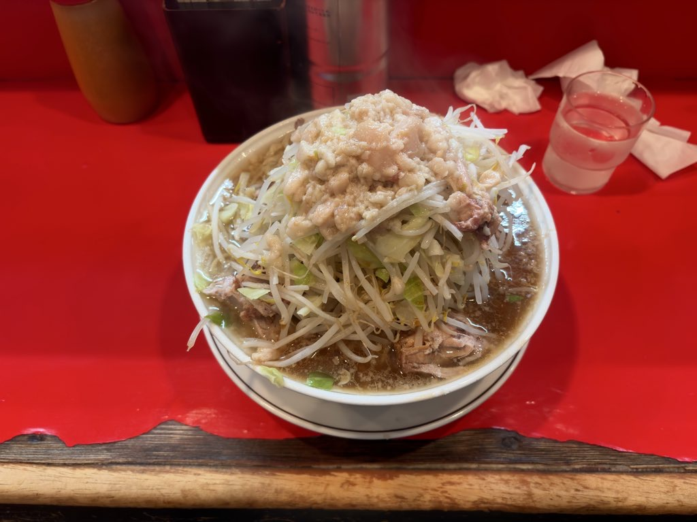
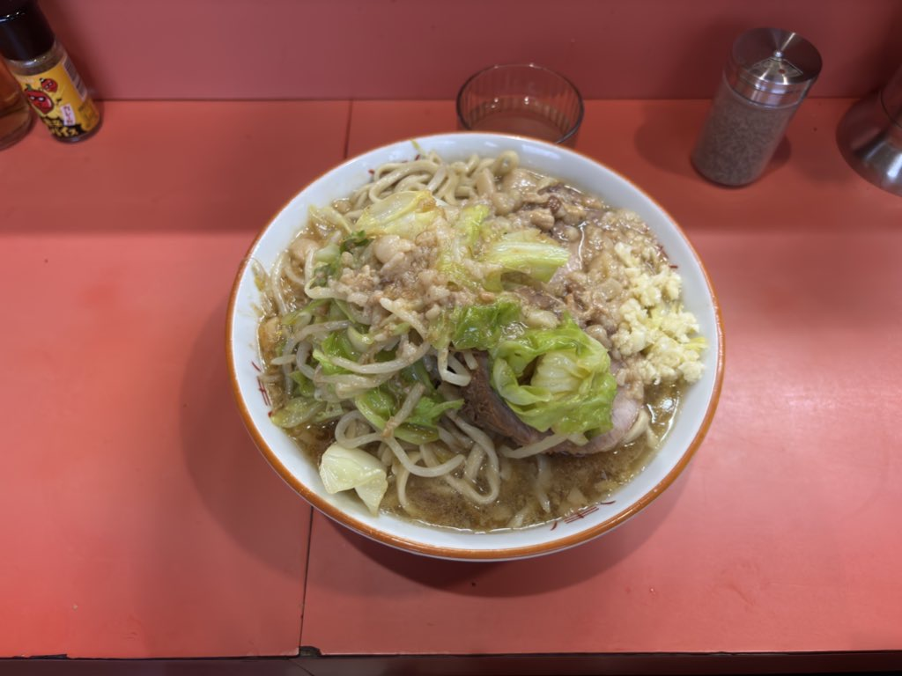

電通大生が一人暮らしで住むならどこ？
こんにちは、あるいはこんばんは。しおり🔖です。
電気通信大学に通うことになって、まず悩むのが「どこに住むか」。自分はおよそ6ヶ月ほどずっと物件探しをしていました。
通学1時間以内で、一人暮らしで現実的に検討しやすいエリアを、京王線沿線を中心に、京王相模原線・神奈川寄り・バス圏も含めてできるだけ広くまとめました。
最初にtierでざっくり整理し、そのあと候補エリアを広めに列挙していきます。
なお、『かのかり』の一ノ瀬千鶴のような子は隣にいません。あるのは家賃と通学時間です。 セックス部屋セックス抜きです。
まず結論を言います。 ドーム（電通大の寮）住めるならドーム一択。大学近い・スーパー近い・コンビニ近い・駅近い・家賃安いなどなどメリットしかない。
表の見方・前提
- 通学時間 … 駅から大学までのざっくり目安。調布駅から大学まで徒歩約8分も含めて、待ち時間や各停/急行の差を見込んで少し広めに書いてる。
- 家賃相場 … ワンルーム〜1K想定のざっくり月額。築年数・駅距離・バストイレ別かでかなり上下する。
- 特急停車駅 … 通学で有利だから、同程度の距離・家賃ならtier少し上げてる。
- チャリで行きやすい … 自転車で大学まで行きやすいも基準に入れてる。調布・布田・西調布あたりは自転車圏なのでtier有利にみてる。
Tier一覧（電通大生・一人暮らし・通学1時間以内）
| Tier | 代表候補 | 通学時間の目安 | 家賃相場の目安 | ひとこと |
|---|---|---|---|---|
| SS | 調布・布田・京王多摩川 | 約5〜15分 | 約6.0〜9.0万円 | 通学が一番ラクでここが良いと思う |
| S | 国領・柴崎・西調布 | 約12〜22分 | 約5.8〜7.5万円 | 調布の隣で、寝坊リスクを減らしつつ家賃もまだ耐えやすい |
| A | 飛田給・つつじヶ丘・府中・分倍河原・京王稲田堤・矢野口・仙川・千歳烏山 | 約12〜35分 | 約5.8〜8.5万円 | 特急停車も多く、通学・家賃のバランスが取りやすい |
| B | 武蔵野台・京王よみうりランド・京王永山・京王多摩センター・南大沢 | 約18〜45分 | 約4.5〜6.8万円 | 価格と距離考えたら二番手でおすすめ |
| C | 若葉台・聖蹟桜ヶ丘・高幡不動・京王堀之内・多摩境・稲城 | 約22〜50分 | 約4.5〜7.0万円 | 通学は長めだが、家賃・広さで取りに来るならあり |
| D | 南平・北野・京王八王子・八王子・橋本 | 約35〜50分 | 約4.5〜6.3万円 | 通学は長め。家賃・部屋の広さを優先するならあり |
| E | 武蔵野・町田・吉祥寺・三鷹・登戸など | 約40〜60分 | 約5.5〜8.8万円 | 吉祥寺・三鷹は家賃高め。乗り換え・バスが絡む |
- SS … 朝・雨の日でも通学がかなり楽。お金で通学ストレスを減らすイメージ。
- S … 「調布は高い、でも遠いのは嫌」にちょうどいい。
- A … 学生が家賃を気にしつつ一人暮らしするなら、かなり狙い目。
- B … ハマれば十分あり。ただ、朝のしんどさは少しずつ出てくる。
- C … 通学は長いが、家賃・部屋の広さを優先するなら現実的。
- D … 乗り換えやバスが増える。毎日通うとじわじわ削られる。
- E … 通えなくはないけど、通学最優先で選ぶなら優先度は下がる。
個人的には、通学30分以内かつ乗り換えなしかチャリで行きやすいならS〜A帯くらいになる。
部屋を探す際にこだわった方がいい条件
エリアを決めたあと、内見するときに自分がこだわった方がよかったなと思う条件を書いときました。内見はマジでちゃんと行った方がいい（写真と違う・日当たりや騒音がわかる）。
- 駅・大学からの距離 … 徒歩・チャリで何分か。雨の日でもいけるかで見とく。
- 日当たり・風通し … 窓の向きと階。北向き・1階は暗くてジメっとしやすい。
- 周辺の買い物 … スーパー・コンビニが歩いていけるか。自炊するならここ大事。
- 家賃以外 … 共益費・光熱費・ネット代。月にいくら飛ぶか一緒に考えたほうがいい。
- 設備 … バストイレ別、洗濯機置き場、駐輪場。特にバストイレ別はマジでこだわった方がいい。掃除のハードルがかなり下がる。
- セキュリティ … オートロックあるか、大家・管理会社の感じ。内見の印象でだいたいわかる。
- 築年数・リフォーム … 古くてもリノベされてればアリ。水回りだけはちゃんと見る。
「ここだけは譲れない」を1〜2個決めとくと絞りやすい。
候補エリアをできるだけ列挙すると
京王線（東側・新宿方面）
- 布田
- 国領
- 柴崎
- つつじヶ丘
- 仙川
- 千歳烏山
通学時間の目安は、布田なら徒歩約10分、国領で約12〜15分、柴崎で約15〜18分、つつじヶ丘で約18〜22分、仙川で約22〜28分、千歳烏山で約28〜35分くらいです。
家賃相場の目安は、布田で約7.0〜8.0万円、国領で約6.5〜7.5万円、柴崎で約6.2〜7.2万円、つつじヶ丘で約6.6〜7.8万円、仙川で約7.4〜8.8万円、千歳烏山で約7.0〜8.5万円くらいです。
このあたりは通学がかなり楽で、気がラク。
東に行くほど家賃は上がるから、「朝ラクにお金払うか」で分かれる。
京王線（西側・府中〜八王子方面）
- 西調布
- 飛田給
- 武蔵野台
- 多磨霊園
- 東府中
- 府中
- 分倍河原
- 中河原
- 聖蹟桜ヶ丘
- 百草園
- 高幡不動
- 南平
- 平山城址公園
- 長沼
- 北野
- 京王八王子
通学時間の目安は、西調布で約12〜15分、飛田給で約15〜18分、武蔵野台で約18〜22分、府中で約18〜22分、分倍河原で約22〜28分、京王八王子で約35〜45分くらいです。
家賃相場の目安は、西調布で約6.0〜7.0万円、飛田給で約5.8〜6.8万円、武蔵野台で約5.5〜6.6万円、府中で約6.5〜7.8万円、分倍河原で約6.0〜7.2万円、京王八王子で約5.0〜6.3万円くらいです。
西に行くほど家賃落とせるのが強み。
かわりに北野・京王八王子まで行くと、「普通に朝きつい」になりがち。
京王相模原線（神奈川寄り）
- 京王多摩川
- 京王稲田堤
- 京王よみうりランド
- 稲城
- 矢野口（JR南武線）
- 若葉台
- 京王永山
- 京王多摩センター
- 京王堀之内
- 南大沢
- 多摩境
- 橋本
通学時間の目安は、京王多摩川で約12〜15分、京王稲田堤で約18〜25分、稲城で約22〜28分、若葉台で約28〜35分、京王多摩センターで約32〜40分、南大沢で約35〜45分、橋本で約40〜50分くらいです。
家賃相場の目安は、京王多摩川で約6.0〜7.0万円、京王稲田堤で約5.8〜6.8万円、稲城で約5.8〜6.8万円、若葉台で約5.8〜6.8万円、京王多摩センターで約5.5〜6.5万円、南大沢で約4.5〜6.5万円、橋本で約4.5〜6.0万円くらいです。
調布まで乗り換えなしで出られるのがでかい。
家賃・広さ・通学時間のバランス取りやすいから、候補としては一番広く見ておきたいとこ。
バス圏・他路線まで広げるなら
- 武蔵野
- 町田
- 吉祥寺
- 三鷹
- 登戸
通学時間の目安は、ルート次第でだいたい約40〜60分前後です。
家賃相場の目安は、武蔵野で約6.0〜8.0万円、町田で約5.5〜7.0万円、吉祥寺で約7.5〜8.8万円、三鷹で約7.0〜8.5万円、登戸で約6.2〜7.5万円くらいです。
ルート次第で1時間圏には入る。
ただ京王線沿線より乗り換え増えるし、バス頼りだと朝の時間読みづらいから、通学のラクさは落ちる。
個別解説
調布・布田・京王多摩川（Tier SS）
大学まで約5〜15分目安 / 家賃相場は約6.0〜9.0万円目安の最寄り圏。徒歩・自転車で通える物件が多く、通学は一番楽。
- 駅前にスーパー・飲食・家電量販店とか揃ってて生活しやすい
- 京王特急停車で新宿も出やすい
- 京王多摩川は調布の隣（相模原線）で、約12〜15分と同様に最寄り圏
- 布田まで含めると、調布より少し落ち着いた住環境の物件も探しやすい
- 人気エリアのため家賃は高め
実験で遅くなりやすい人、サークル後の帰りを楽にしたい人にはかなり強い。予算に余裕があるなら、やっぱりここが楽。 近さで起きるのはラブコメイベントじゃなく、朝に10分長く寝られること。
国領・柴崎・つつじヶ丘（Tier S〜A）
大学まで約12〜22分目安 / 家賃相場は約6.2〜7.8万円目安。調布の東側で、通学と住みやすさのバランスがいいあたり。
- 国領・柴崎は落ち着いた住宅街で、調布より少し家賃を抑えやすい
- つつじヶ丘は特急停車で、生活圏としても十分便利
- 東に行くほど新宿側の利便性が上がる一方、家賃は少しずつ上がりやすい
「調布は高いけど、遠くに行きすぎるのも嫌」という新入生にはかなりちょうどいい。
西調布・飛田給・武蔵野台（Tier S〜B）
大学まで約12〜22分目安 / 家賃相場は約5.5〜7.0万円目安。調布の西で、家賃を落とし始められるゾーン。
- 西調布はS・自転車圏で通学のしやすさがかなり高い。飛田給はA
- 武蔵野台はB。飛田給・武蔵野台まで行くと家賃がより現実的になりやすい
- 大学周辺の買い物は調布、日常生活は住んでいる駅周辺という使い分けがしやすい
「徒歩圏じゃなくていいから、そのぶん家賃を下げたい」学生にはかなり相性がいい。
京王稲田堤・京王よみうりランド・稲城（Tier A〜B〜C）
大学まで約18〜28分目安 / 家賃相場は約5.8〜6.8万円目安。相模原線で、神奈川寄りも考え始めるならこのへん。
- 京王稲田堤はA・特急停車で、乗り換えなしで通学しやすい
- 京王よみうりランドはB。稲城はC帯。どちらも相模原線で直通、神奈川寄りになるほど家賃を抑えやすくなる
「神奈川寄りも見たいけど、橋本まではまだ遠い」と感じる人にはこのへんが現実的。
府中・東府中・多磨霊園・分倍河原（Tier A）
大学まで約18〜28分目安 / 家賃相場は約6.0〜7.8万円目安。京王線でも生活の便利さが強いとこ。
- 府中は駅前がにぎってて買い物・外食に困りにくい
- 二郎があるから、二郎好きな人には府中がオススメ。仙川にもある。府中二郎はめっちゃ美味い。
- 東府中・多磨霊園は府中より静かで家賃も少し抑えやすい
- 分倍河原は南武線も使えるからバイト・遊びの幅が広い

府中二郎の一杯。めっちゃ美味い。
中河原・聖蹟桜ヶ丘・百草園・高幡不動（Tier C）
大学まで約25〜35分目安 / 家賃相場は約5.3〜6.8万円目安。ここから家賃を落としやすくなるあたり。
- 中河原は比較的地味だが、そのぶん家賃とのバランスを取りやすい
- 聖蹟桜ヶ丘・高幡不動はC。聖蹟桜ヶ丘は駅前の便利さが高く、街としての魅力がある
- 百草園・高幡不動まで行くと通学は長くなるが、家賃はかなり現実的になる
駅前の便利さ重視なら聖蹟桜ヶ丘、家賃下げたいなら高幡不動寄りで見たらいい。
若葉台・京王永山・京王多摩センター・京王堀之内・南大沢・多摩境（Tier B〜C）
大学まで約28〜45分目安 / 家賃相場は約5.0〜6.8万円目安。相模原線の中盤〜後半で、家賃・広さ・通学のバランス取りやすいゾーン。
- 若葉台はC。わりと新しくて街も整ってる
- 京王永山・京王多摩センター・南大沢はB（特急停車）。駅前も強く買い物しやすい
- 京王堀之内・多摩境はC。広めの部屋や家賃の安さを狙いやすい
「調布近辺は高い。でも橋本まで行くのはちょっと迷う」という学生は、この帯をかなり広めに見ていい。
橋本（Tier D）
大学まで約40〜50分目安 / 家賃相場は約4.5〜6.0万円目安。京王相模原線の終点で特急停車。神奈川から調布まで同じ線で直通。
- 京王線・JR横浜線・JR相模線が乗り入れるターミナルで、特急で調布まで約40〜50分
- 調布より家賃がかなり安いとこが多く、予算抑えたい一人暮らしには現実的
- 駅周辺の商業施設が強くて生活しやすい
「神奈川に住みたい」「家賃抑えたい」「通学はシンプルがいい」ならかなり強い候補。
仙川・千歳烏山（Tier A）
大学まで約22〜35分目安 / 家賃相場は約7.0〜8.8万円目安。東側で人気のエリアで、通学は現実的だけど家賃は安くない。
- 都心寄りで、通学以外の利便性は高い
- 仙川にも二郎がある。二郎好きな人には府中と仙川がオススメ。ぶっちゃけ仙川二郎はそんな美味しくない。
- おしゃれ・駅前の強さはあるけど、学生が「安さ」で選ぶエリアじゃない
- 通学だけなら十分圏内。コスパでいうと評価分かれる

仙川二郎の一杯。ぶっちゃけそんな美味しくない（賛否両論）。
大学以外にも新宿側に出やすいとこに住みたい人向け。
南平・平山城址公園・長沼・北野・京王八王子（Tier D）
大学まで約35〜45分目安 / 家賃相場は約4.8〜6.3万円目安。1時間以内には収まるけど、毎日通うにはけっこう長い。
- 京王八王子は特急停車で、D帯の中ではまだ通学しやすい方
- 南平・平山城址公園・長沼は家賃重視なら視野に入る
- 北野・京王八王子まで行くと、広めの部屋も見つけやすい
- 通学より「予算」「広さ」「静かさ」を優先する人向け
とにかく家賃下げたい・少し広い部屋に住みたいならアリ。朝が早い日が多いなら覚悟は必要。
町田・吉祥寺・三鷹・登戸（Tier D〜E・補足枠）
大学まで約40〜60分目安 / 家賃相場は約5.5〜8.8万円目安。京王線沿線じゃないけど、条件次第で1時間圏に入る枠。
- 町田は生活の便利さは高いが、通学は乗り換えが増えやすい
- 吉祥寺は人気エリアで家賃が高め（7.5〜8.8万くらい）。三鷹もやや高め。バス通学も絡むので時間が読みづらい
- 登戸はバイト先や生活圏次第ではありだが、電通大通学のメイン候補ではない
「住みたい街」で選ぶなら全然アリ。ただ電通大への通いやすさだけで見ると優先度は下がる、って感じ。
まとめ（選び方の目安）
- SS（通学最優先・約5〜15分） → 調布・布田・京王多摩川
- S（かなり有力・約12〜22分） → 国領・柴崎・西調布
- A（通学・家賃のバランス・約12〜35分） → 飛田給・つつじヶ丘・府中・分倍河原・京王稲田堤・矢野口・仙川・千歳烏山
- B（二番手でおすすめ・約18〜45分） → 武蔵野台・京王よみうりランド・京王永山・京王多摩センター・南大沢
- C（家賃・広さで取りに来るならあり・約22〜50分） → 若葉台・聖蹟桜ヶ丘・高幡不動・京王堀之内・多摩境・稲城
- D（通学は長め・約35〜50分） → 南平・北野・京王八王子・八王子・橋本
- E（乗り換え・バス多め・約40〜60分） → 武蔵野・町田・吉祥寺・三鷹・登戸など
「電通大から1時間以内」で見ると候補駅は思ったより多い。
学生目線で実際に住みやすいのはやっぱり調布近辺・府中方面・相模原線の中盤あたり。
通学のしんどさ / 家賃 / 駅前の便利さの3つで見るとかなり絞れる。
結局効いてくるのは隣人ガチャより通学・家賃・スーパーまでの距離。
これから電通大に来る人の参考になればいいなと執筆してます。